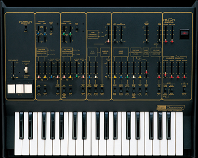

Virtual ARP reproduces sounds of the influential 1970s ARP Odyssey synthesizer, featured in music from Kraftwerk to Yellow Magic Orchestra. Press
play
then roll over the screen to trigger samples, or press
random
to generate random sounds.
